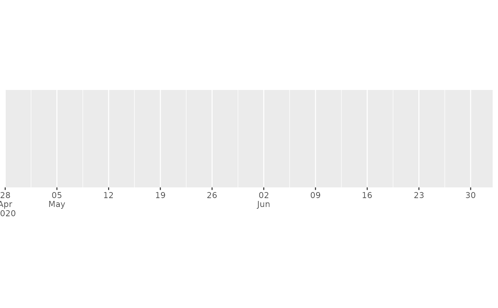

label_date() and label_time() label date/times using date/time format
strings. label_date_short() automatically constructs a short format string
suffiicient to uniquely identify labels. It's inspired by matplotlib's
ConciseDateFormatter,
but uses a slightly different approach: ConciseDateFormatter formats
"firsts" (e.g. first day of month, first day of day) specially;
date_short() formats changes (e.g. new month, new year) specially.
label_date(format = "%Y-%m-%d", tz = "UTC") label_date_short(format = c("%Y", "%b", "%d", "%H:%M"), sep = "\n") label_time(format = "%H:%M:%S", tz = "UTC") date_format(format = "%Y-%m-%d", tz = "UTC") time_format(format = "%H:%M:%S", tz = "UTC")
Arguments
| format | For For |
|---|---|
| tz | a time zone name, see |
| sep | Separator to use when combining date formats into a single string. |
Value
All label_() functions return a "labelling" function, i.e. a function that
takes a vector x and returns a character vector of length(x) giving a
label for each input value.
Labelling functions are designed to be used with the labels argument of
ggplot2 scales. The examples demonstrate their use with x scales, but
they work similarly for all scales, including those that generate legends
rather than axes.
Old interface
date_format() and time_format() are retired; please use label_date()
and label_time() instead.
Examples
date_range <- function(start, days) { start <- as.POSIXct(start) c(start, start + days * 24 * 60 * 60) } two_months <- date_range("2020-05-01", 60) demo_datetime(two_months)#> scale_x_datetime()#> scale_x_datetime(labels = date_format("%m/%d"))#> scale_x_datetime(date_labels = "%m/%d")# An alternative labelling system is label_date_short() demo_datetime(two_months, date_breaks = "7 days", labels = label_date_short())#> scale_x_datetime(date_breaks = "7 days", labels = label_date_short())# This is particularly effective for dense labels one_year <- date_range("2020-05-01", 365) demo_datetime(one_year, date_breaks = "month")#> scale_x_datetime(date_breaks = "month")#> scale_x_datetime(date_breaks = "month", labels = label_date_short())